Esta guía recorre cada pantalla y cada botón del sistema, con capturas reales y la vista de cada rol. Del ingreso al despacho certificado, para que cualquier usuario entienda qué ve y qué hacer.
1 Cómo se entra
Cada persona entra con el correo y la contraseña que le asignó su administrador, y ve únicamente lo que su rol permite. Un cliente nunca ve equipos de otra empresa.
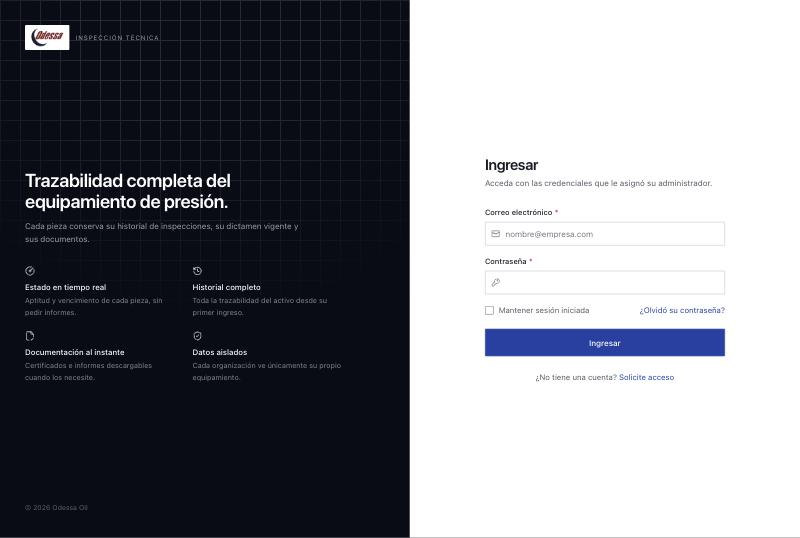
Odessa — dueño del sistema
Ve y hace todo: catálogos, operaciones, empresas, usuarios. Único que puede deshacer una aprobación.
Operarios de Odessa
Recibe, inspecciona, dictamina, repara y despacha. Carga los informes. Ve equipos de todas las empresas.
Empleado de la empresa cliente
Pre-carga los envíos al taller y autoriza reparaciones. Solo su empresa. No toca inventario.
Empresa cliente — solo mirar
Ve sus equipos, vencimientos e informes. No puede cargar ni modificar nada.
2 La pantalla de inicio
Lo primero que se ve al entrar. Resume el estado del equipamiento y la carga del taller. El cliente ve solo los números de su empresa.
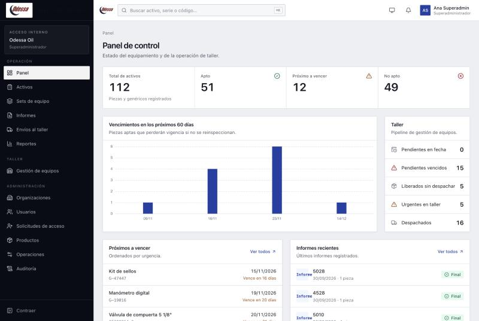
3 El inventario
El inventario de piezas y equipamiento genérico, cada uno con su estado de aptitud vigente.
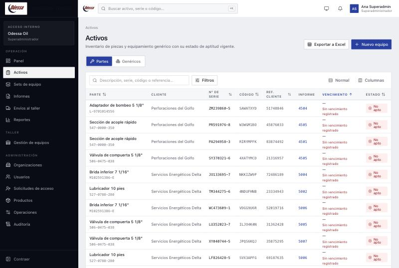
4 El corazón del sistema
Todo lo que se sabe de una pieza: su estado, sus vencimientos, su historial y sus documentos. Se llega tocando cualquier pieza del listado.
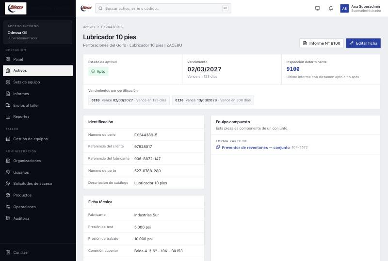
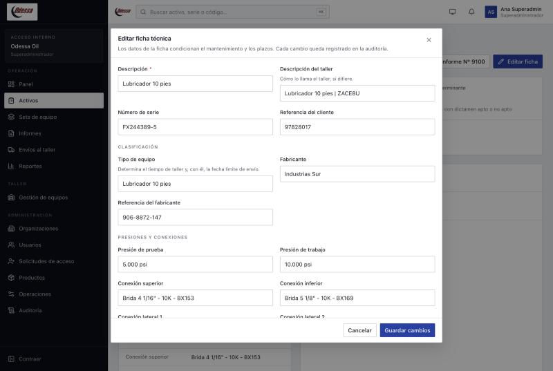
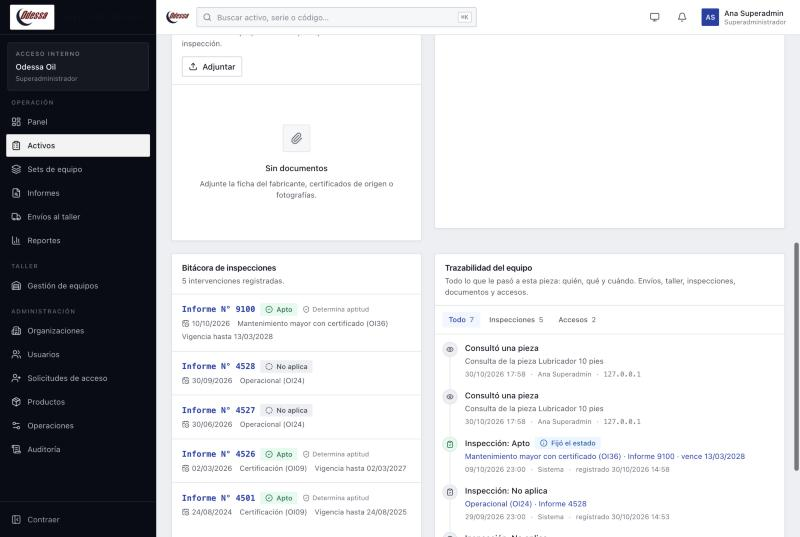
5 Las inspecciones
Cada inspección es un informe: un trabajo que hace la empresa sobre una o varias piezas, con su resultado y vencimiento. Es lo que actualiza el estado de los equipos.
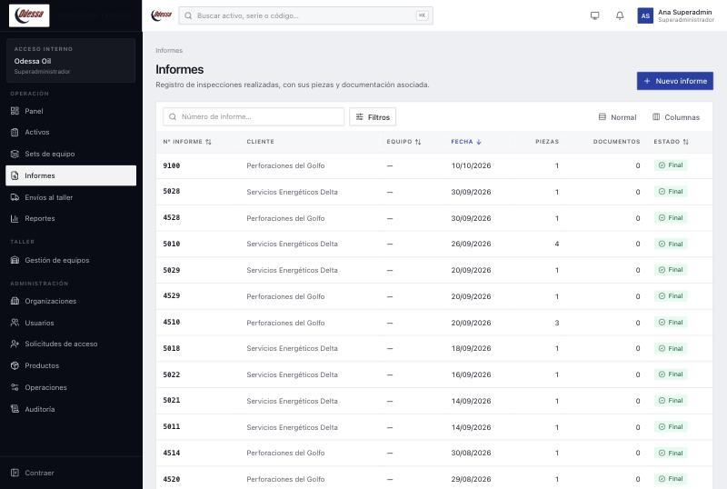
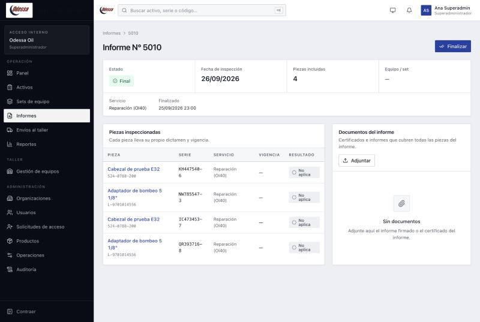
6 Lo que manda el cliente
El operador del cliente declara acá los equipos que manda. Hasta que el taller no les da recepción, un envío es solo una declaración.
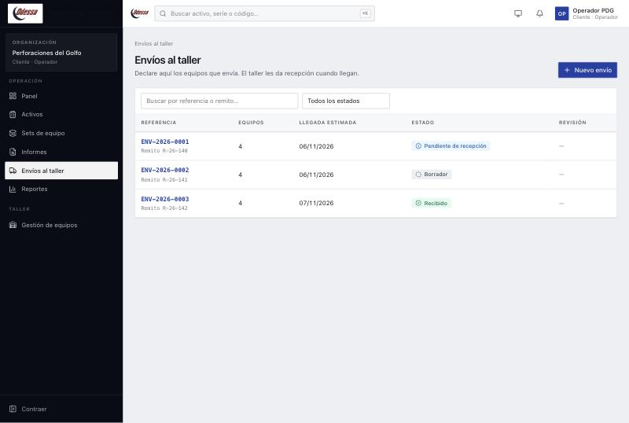
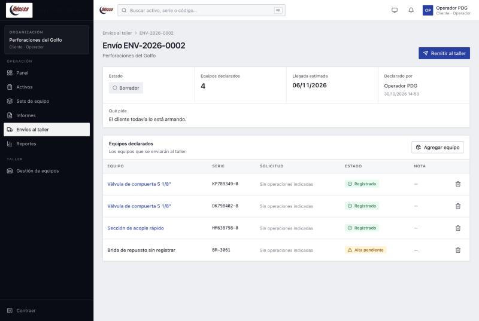
7 El trabajo del taller
El recorrido del equipo en el taller: ingreso, dictamen, reparación si hace falta y despacho. Cada pieza avanza por etapas y en cada una se ofrece solo la acción que corresponde.
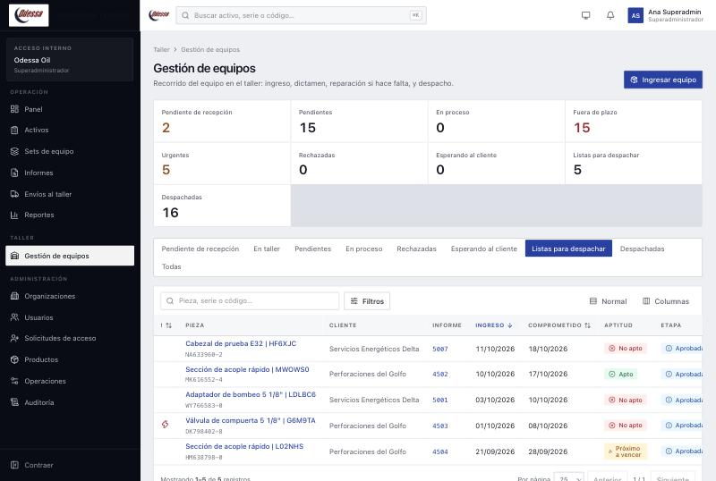
Cuando llega un envío, el taller le da recepción. Se asume que llegó todo lo declarado; el taller solo marca lo que no llegó.
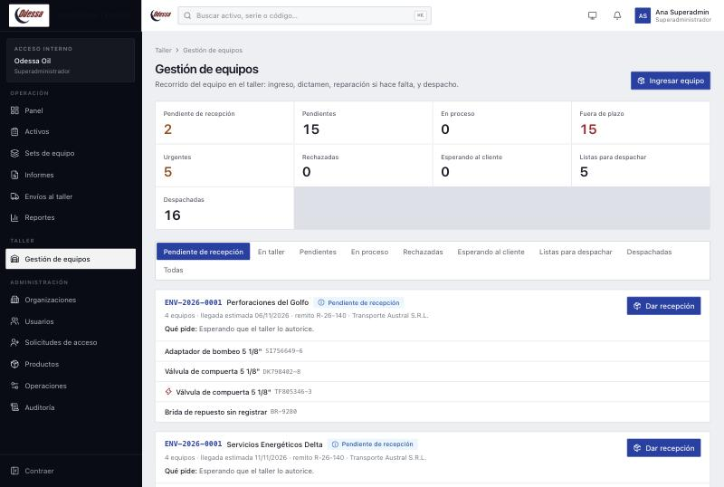
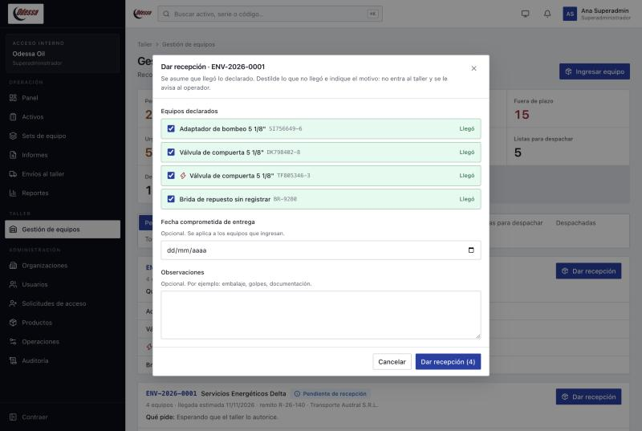
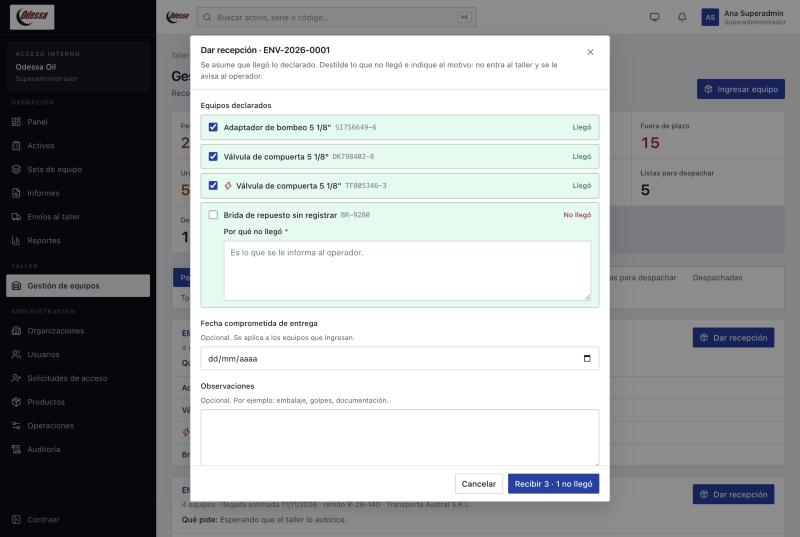
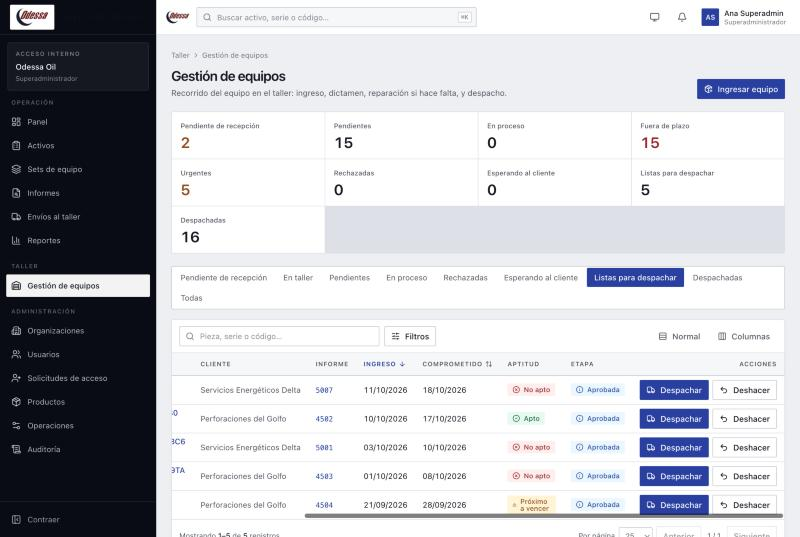
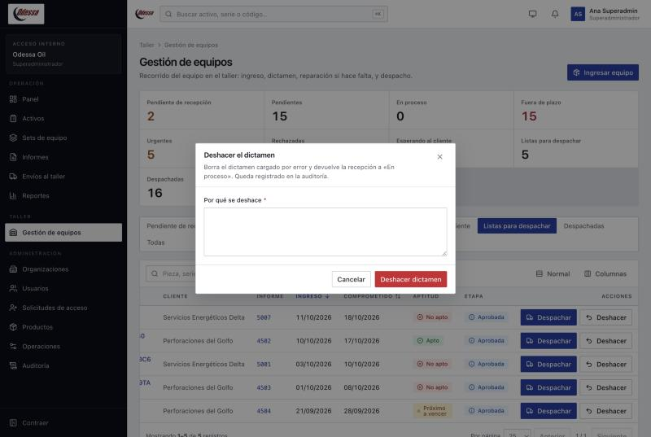
8 La foto del parque
Status de los equipos, vencimientos y trabajos del taller, por organización y por período.
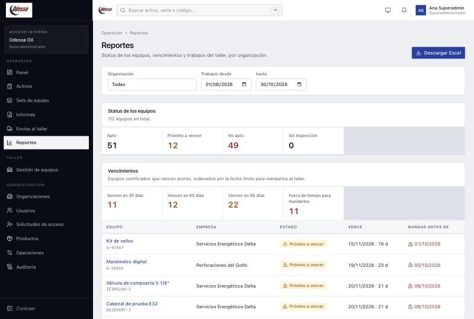
9 Solo el superadministrador
Donde se configura el sistema: empresas, usuarios, operaciones (con sus vigencias) y la auditoría. Solo lo ve el superadministrador.
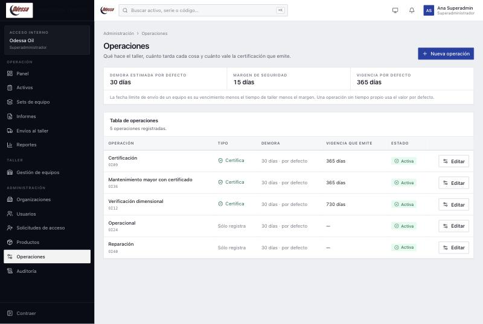
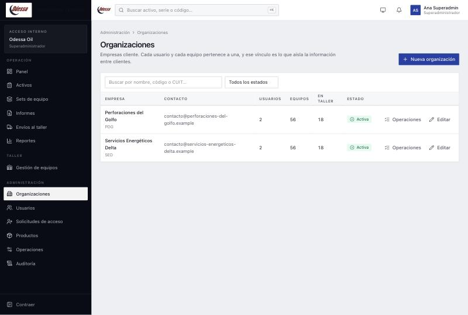
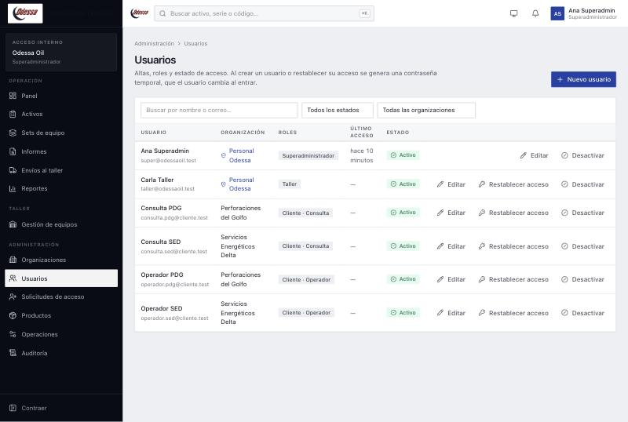
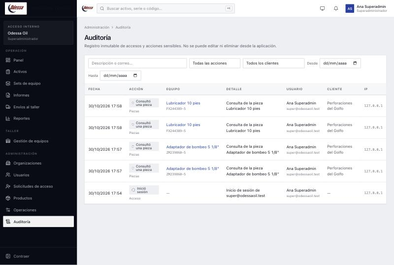
10 La misma app, distinta según quién entra
El menú y los botones cambian según el rol. Dos ejemplos del lado del cliente.
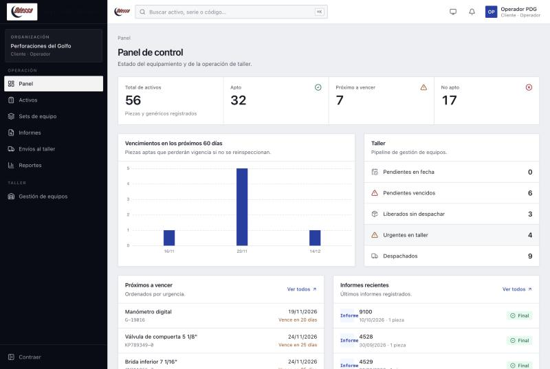
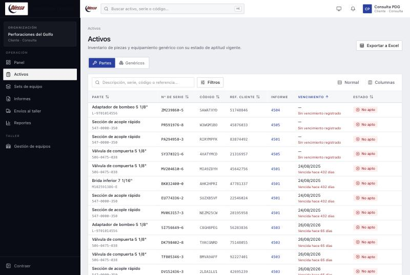
11 Glosario